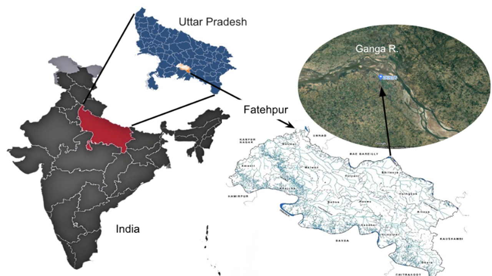
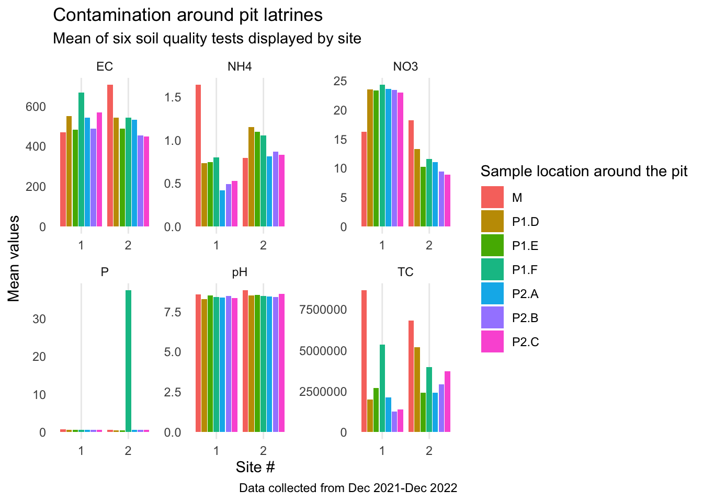

The goal of breathablepitlat is to demonstrate the transport of contaminants from two pour flush, twin-pit latrines in which one pit is lined and one is unlined.
Installation
You can install the development version of breathablepitlat from GitHub with:
# install.packages("devtools")
devtools::install_github("openwashdata/breathablepitlat")
## Run the following code in console if you don't have the packages
## install.packages(c("dplyr", "knitr", "readr", "stringr", "gt", "kableExtra"))
library(dplyr)
library(knitr)
library(readr)
library(stringr)
library(gt)
library(kableExtra)Alternatively, you can download the individual datasets as a CSV or XLSX file from the table below.
| dataset | CSV | XLSX |
|---|---|---|
| breathablepitlat | Download CSV | Download XLSX |
Data
The package provides access to one dataset breathablepitlat.
breathablepitlat
The dataset breathablepitlat contains data about … It has 3132 observations and 8 variables
breathablepitlat |>
head(3) |>
gt::gt() |>
gt::as_raw_html()| site | depth | lateral | time | test | location | values | num_test |
|---|---|---|---|---|---|---|---|
For an overview of the variable names, see the following table.
| variable_name | variable_type | description |
|---|---|---|
| site | integer | There are two sites for the field test: site 1 and site 2. A twin-pit pour-flush pit latrine was constructed at each site. |
| depth | double | The soil samples were collected at two different depths (1 m and 0.5 m) from ground level. |
| lateral | double | The soil samples were collected from 0.5 m , 1 m, 5 m and 10 m lateral distance away from the pit. |
| time | double | This describes the time (in days) of sample collection. The water and soil samples were collected over a period of 322 days. |
| test | integer | The 6 parameters tested from the samples collected in this field test. They include pH, electrical conductivity, total coliform, nitrate, ammonia, and phosphorus. |
| location | integer | The location of the soil samples marked P1 for unlined and P2 for lined pit. A, B, C, D, E, F are locations around the pits while M is the middle point between the lined and unlined pit. |
| values | double | The values measured for said parameter |
| num_test | logical | The values measured for said parameter |
Example
Geographical location of the study site. The village locates in the delta area adjacent to the Ganga River along the border of Fatehpur District, Uttar Pradesh province, India.

library(breathablepitlat)
library(tidyverse)
mean_location <- breathablepitlat |>
filter(!str_detect(location, "ined")) |>
filter(num_test=TRUE) |>
group_by(test, site, location) |>
summarize(mean = mean(values, na.rm = TRUE),
std_error = sd(values, na.rm = TRUE) / sqrt(n()),
count=n()
)
# Provide some example code here
ggplot(data = mean_location,
mapping = aes(x = site,
y = mean,
fill = location)) +
geom_col(position = position_dodge2()) +
facet_wrap(~test, scales = "free")+
theme_minimal() +
labs(title = "Contamination around pit latrines",
subtitle = "Mean of six soil quality tests displayed by site",
x = "Site #",
y = "Mean values",
fill = "Sample location around the pit",
caption = "Data collected from Dec 2021-Dec 2022")+
theme(panel.grid.minor = element_blank(),
panel.grid.major.y = element_blank())
License
Data are available as CC-BY.
Citation
Please cite this package using:
citation("breathablepitlat")
#> To cite package 'breathablepitlat' in publications use:
#>
#> Zhong M, Saxena S (2024). "breathablepitlat: Dataset about
#> experiments of field application of breathable laminate-lined pit
#> latrines." doi:10.5281/zenodo.13960699
#> <https://doi.org/10.5281/zenodo.13960699>,
#> <https://github.com/openwashdata/breathablepitlat>.
#>
#> A BibTeX entry for LaTeX users is
#>
#> @Misc{zhong_etall:2024,
#> title = {breathablepitlat: Dataset about experiments of field application of breathable laminate-lined pit latrines},
#> author = {Mian Zhong and Shray Saxena},
#> year = {2024},
#> doi = {10.5281/zenodo.13960699},
#> url = {https://github.com/openwashdata/breathablepitlat},
#> abstract = {This dataset assists with a research study aims at capturing the pathogens and contaminants from pit latrines by lining them with a hydrophobic laminate. The data are collected to demonstrate the transport of contaminants from two pour flush, twin-pit latrines in which one pit is lined and one is unlined.},
#> version = {0.0.0.9000},
#> }